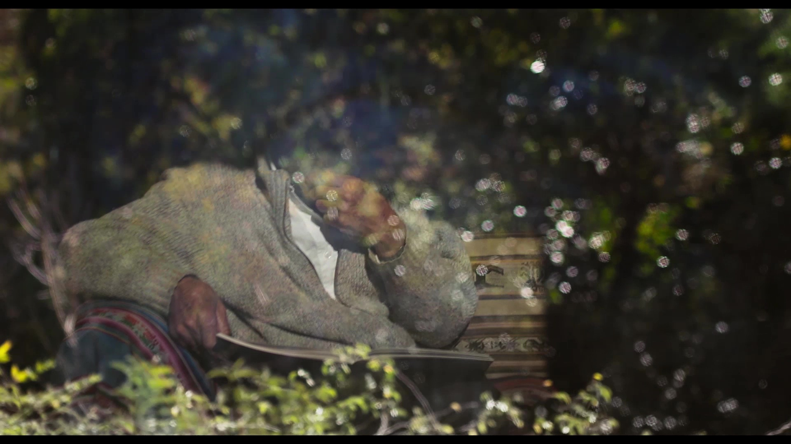

Yo no es otro


En el mejor momento de su carrera, un pintor decide recluirse en la montaña y desarrollar su obra por fuera del circuito tradicional del arte. Su casa se convierte en un último refugio, una extensión de su obra y la nave que lo traslada en el tramo final de su viaje. El trayecto es tan sólo una excusa para la búsqueda de la propia identidad a través del arte.
Largometraje Documental
Año de producción: 2021
Estado: Distribución
Dirección y Guion: Santiago Sein
Dirección de fotografía: Marcos Rostagno
Dirección de sonido: Gastón Sahadny - Atilio Sánchez
Montaje: Lucía Torres Minoldo
Música: Santiago Guerrero